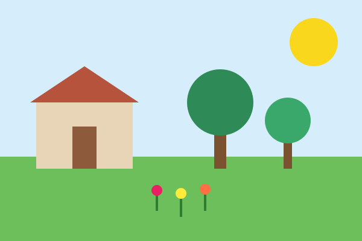

Pastelería Dulce Hogar
Tortas y postres por encargo para cumpleaños, bodas y eventos.
Ver másEn este sitio presentamos dos servicios de nuestra ciudad. Elegimos servicios fuera del área tecnológica para mostrar que cualquier negocio puede tener su página web.
Tortas y postres por encargo para cumpleaños, bodas y eventos.
Ver más
Diseño y mantenimiento de jardines para casas y empresas.
Ver más